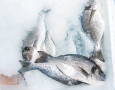

Découvrir les critères de fraîcheur et de conservation
Quels sont les caractéristiques d'un poisson frais ? A quelle température et dans quelles conditions doit on les conserver ?
Critères de fraîcheur
Attention :
Il est du rôle de la personne qui réceptionne de vérifier l'état de fraîcheur de la livraison. Si celle-ci n'est pas conforme, elle en droit de refuser la marchandise qui ne sera alors pas facturée.
Conditions de stockage et de conservation des poissons
 Glace | Il est bien connu que les activités tant enzymatique que microbiologique sont très influencées par la température. Cependant, si la température varie de 0 à 25°C, l'activité microbienne est relativement plus importante, et les variations de température ont une plus grande influence sur la croissance microbienne que sur l'activité enzymatique. |
Complément :
Courbe de température et développement microbien | Ci-joint un tableau qui indiquant une courbe de température et le développement microbien |
Fondamental :
C'est pourquoi les produits de la pêche sont conservés à 0 ou 2°C sous glace afin de préserver toutes leurs qualités sanitaires et organoleptiques.
Ils seront stockés dans une chambre froide leur étant dédiée et aux mêmes température.
Critères de fraîcheur des poissons
Définition :
Quelles sont les caractéristiques physiques d'un poisson frais ?